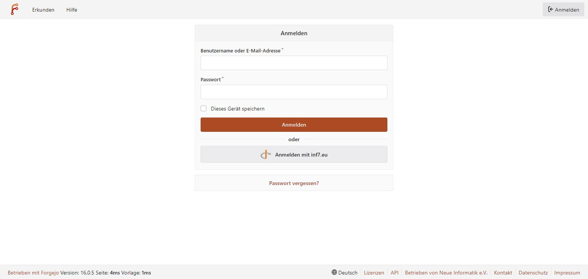
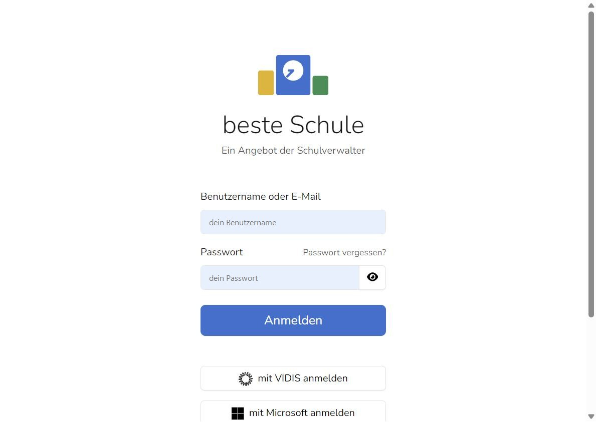
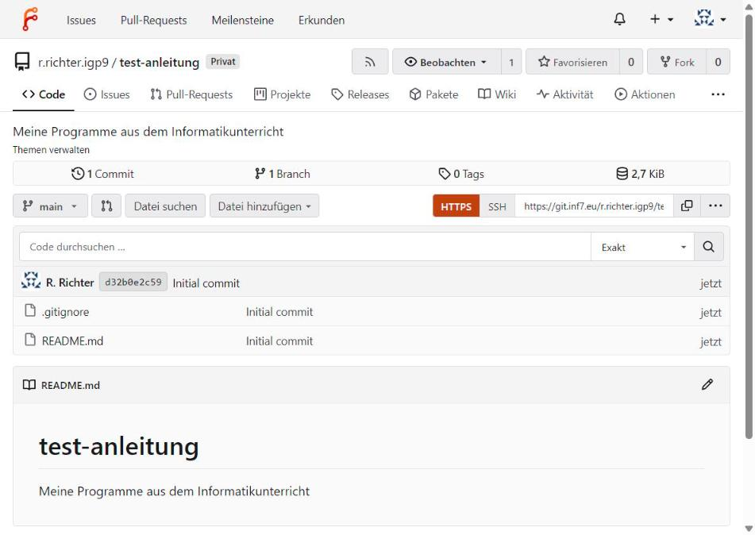
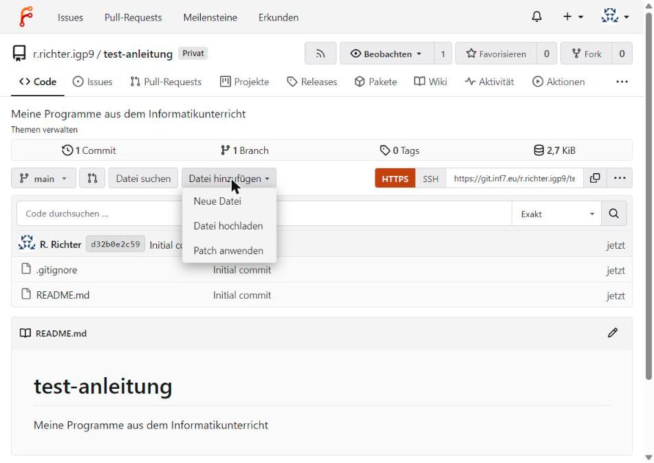
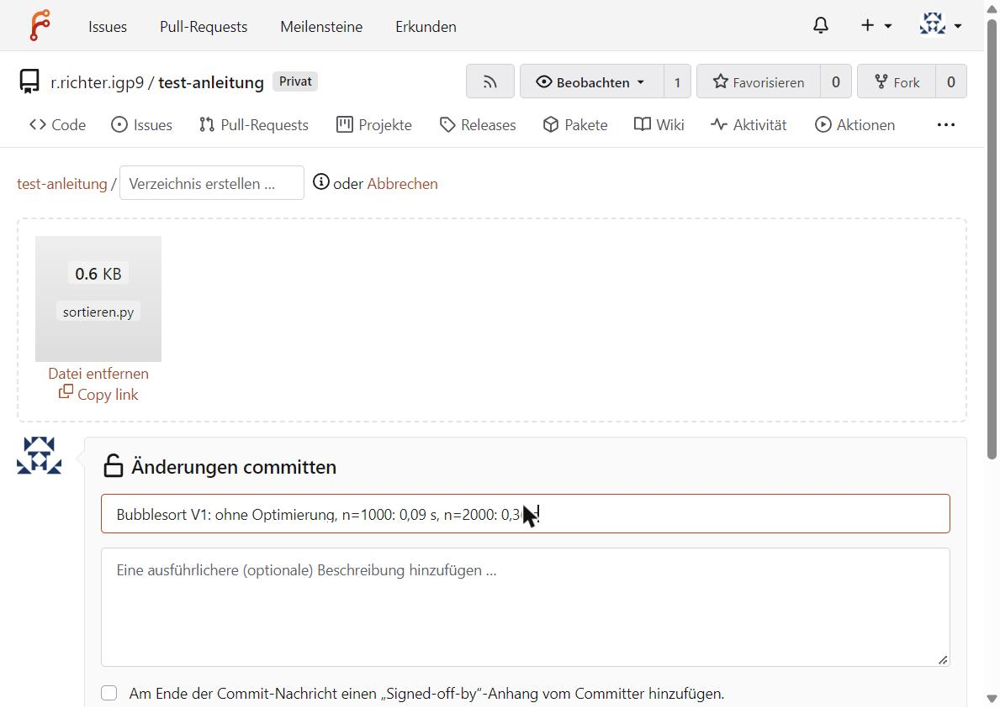
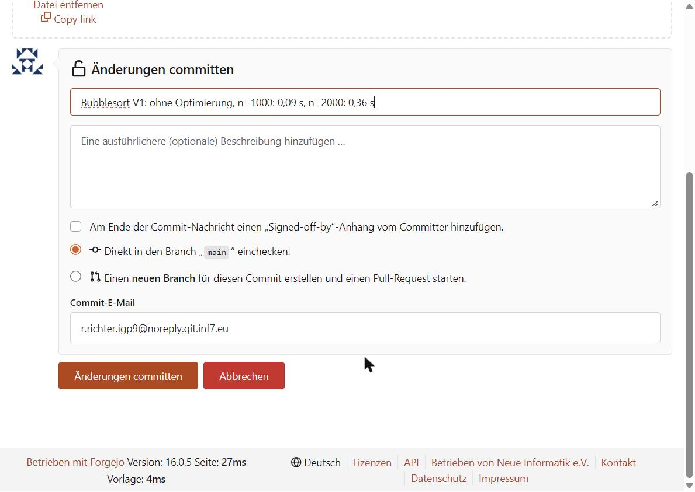
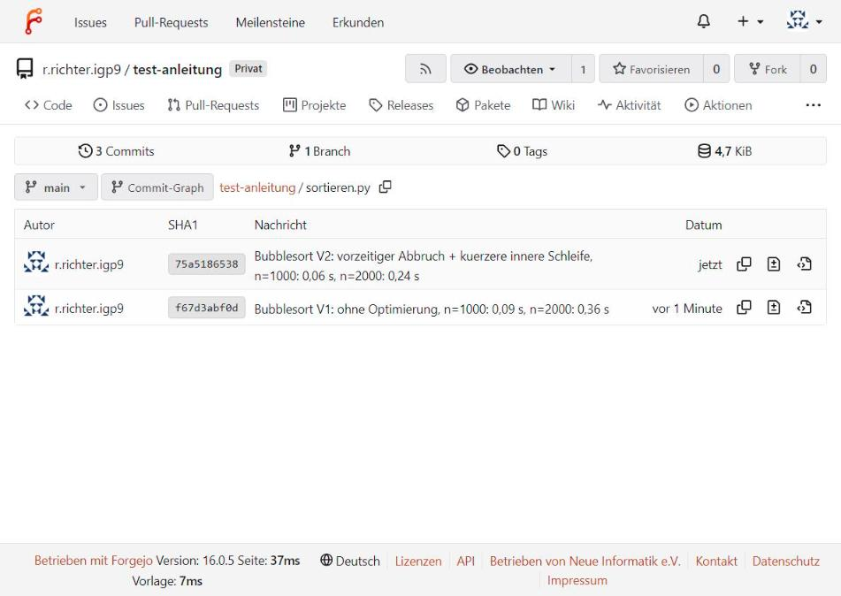
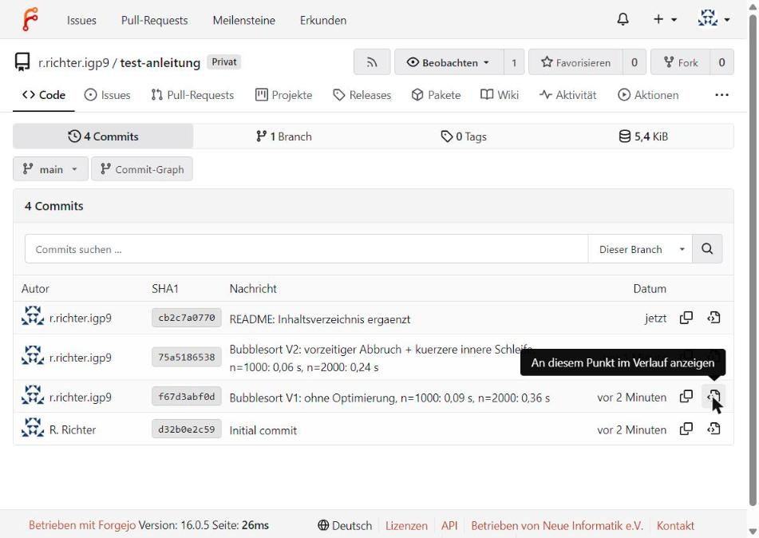

Überblick › LB 2/3 Datenstrukturen
3.0.2 Deine Lösungen mit Git verwalten
bestenliste.py, bestenliste2.py, bestenliste_neu_FINAL.py – und die Fassung, die vorgestern funktioniert hat, ist überschrieben. Ab jetzt legst du alle Programme dieses Kurses in einem eigenen Git-Repository ab. Git speichert jede Fassung mit Datum und Begründung. Du kannst jederzeit nachsehen, was sich geändert hat, und eine ältere Fassung zurückholen.
Wir nutzen den Git-Server git.inf7.eu (Software Forgejo, betrieben vom Verein Neue Informatik e.V.). Du arbeitest nur im Browser, eine Installation ist nicht nötig. Programmiert wird weiter in Thonny. Das Repository legst du selbst an, es ist privat und gehört nur dir.
Die Bilder sind Bildschirmfotos von git.inf7.eu. Das Beispiel-Repository auf den Bildern heißt test-anleitung, deines heißt datenstrukturen. Wo der Benutzername der Lehrkraft steht, steht bei dir deiner.
Die wichtigsten Begriffe
- Repository (kurz Repo): ein Projektordner unter Versionsverwaltung mit allen Dateien und ihrer vollständigen Geschichte.
- Commit: ein gespeicherter Stand aller Dateien, ein Schnappschuss. Jeder Commit hat eine Kennung (SHA, z. B.
3f9a2c1), einen Autor, einen Zeitpunkt und eine Commit-Nachricht. - Verlauf (Historie): die Liste aller Commits, der neueste oben.
- Diff: die Unterschiede zwischen zwei Fassungen. Entfernte Zeilen sind rot mit
-, neue Zeilen grün mit+markiert. - README.md: die Beschreibung im obersten Ordner, in Markdown geschrieben. Sie wird auf der Startseite des Repositorys angezeigt.
- .gitignore: eine Liste von Dateien, die Git nicht verwalten soll, z. B. den Ordner
__pycache__.
Schritt 1: Anmelden
- Im Browser git.inf7.eu öffnen und oben rechts auf „Anmelden“ klicken (Bild 1).
- Die Felder Benutzername und Passwort nicht benutzen, sondern unten „Anmelden mit inf7.eu“ wählen (Bild 2).
- Auf auth.inf7.eu „Continue with beste.schule“ wählen (Bild 3).
- Auf der Anmeldeseite von beste.schule mit deinem gewohnten Zugang anmelden (Bild 4). Beim ersten Mal fragt beste.schule, ob auth.inf7.eu deine E-Mail-Adresse, Klassen, einen gekürzten Namen, deine Rolle und deine Schule erhalten darf. Klicke auf „Erlauben“ (Bild 5).


Bilder 1, 3 und 5 findest du hier: Bild 1, Bild 3, Bild 5. Am Schulrechner meldest du dich am Ende der Stunde über das Menü unter deinem Profilbild ab.
Schritt 2: Repository anlegen
Klicke oben rechts auf „+“ und dann auf „Neues Repository“. Fülle das Formular so aus:
| Feld | Eintrag | Warum |
|---|---|---|
| Besitzer | dein Benutzername (vorausgewählt) | Das Repository gehört dir. |
| Repository-Name | datenstrukturen | Kleinbuchstaben, keine Leerzeichen, keine Umlaute. |
| In privates Repository umwandeln | ankreuzen | Sonst kann jeder deine Lösungen sehen. |
| Beschreibung | z. B. „Meine Programme zu Datenstrukturen, LK Informatik 12“ | erscheint auf der Startseite |
| Vorlage | leer lassen | Du baust alles selbst auf. |
| Repository initialisieren | ankreuzen | Es entstehen README und ein erster Commit. |
| .gitignore | „Python“ | Automatisch erzeugte Python-Dateien werden ignoriert. |
| Lizenz | leer lassen | Bei einem privaten Schul-Repository unnötig. |


Nach „Repository erstellen“ siehst du die Startseite mit .gitignore, README.md und dem Commit „Initial commit“ (Bild 11). Neben dem Namen muss das Etikett „Privat“ stehen.

Schritt 3: Ordnung im Repository
Lege für jedes Kapitel des Kurses einen eigenen Ordner an. Jede Datei bekommt einen sprechenden Namen nach ihrem Inhalt, nicht nach der Aufgabennummer: Eine Datei wie verkettete_liste.py wächst über mehrere Aufgaben, und welche Aufgabe du gerade bearbeitet hast, steht in der Commit-Nachricht. Lege dieselben Ordner auch auf deinem Rechner oder USB-Stick in einem Ordner datenstrukturen an, dann heißen die Dateien in Thonny und im Repository gleich.
datenstrukturen/
├── README.md Inhaltsverzeichnis deiner Lösungen
├── .gitignore
├── 1_listen/
│ ├── negative_werte.py 3.0.1.5
│ ├── verkettete_liste.py 3.1: Node und LinkedList, wächst bis 3.1.2
│ ├── test_verkettete_liste.py Testfälle dazu
│ ├── playlist.py 3.1.4 und 3.1.5
│ └── druckwarteschlange.py 3.2.2
├── 2_baeume/
└── 3_graphen/Einen Ordner musst du nicht vorher anlegen. Er entsteht beim ersten Hochladen, wenn du seinen Namen in die Pfadzeile einträgst (Schritt 4). Welche Datei zu welcher Aufgabe gehört, steht bei jeder Programmieraufgabe im Kasten „Datei & Git“ und in der Übersicht „So arbeitest du im ganzen Kurs“.
Schritt 4: Eine Lösung aus Thonny hochladen
- In Thonny: Programm testen und als
.pyspeichern, Dateiname wie oben (ohne Leerzeichen und Umlaute). - Im Repository: „Datei hinzufügen ▾“ → „Datei hochladen“ (Bild 12).
- Ziel wählen: In der Pfadzeile hinter
datenstrukturen /den Ordner eintragen, z. B.1_listen. Gibt es ihn noch nicht, wird er angelegt. Bleibt das Feld leer, landet die Datei im obersten Ordner. - Datei auswählen: in das gestrichelte Feld ziehen oder hineinklicken. Mehrere Dateien auf einmal landen in einem Commit.
- Commit-Nachricht in die erste Zeile schreiben. Der graue Vorschlag „Dateien nach … hochladen“ sagt nichts aus – schreib immer deine eigene Nachricht.
- „Direkt in den Branch ‚main‘ einchecken“ ausgewählt lassen und auf „Änderungen committen“ klicken (Bild 14).
- Kontrolle: Die Datei steht in der Liste, daneben deine Nachricht. Klicke auf „… Commits“ und prüfe, dass dein Commit oben steht. Fehlt er, lade erneut hoch.



Neue Fassung derselben Lösung: Lade die geänderte Datei mit genau demselben Namen in denselben Ordner hoch. Forgejo ersetzt sie, und es entsteht ein neuer Commit. Heißt die Datei anders (z. B. playlist(1).py), hast du danach zwei Dateien.
Schritt 5: Gute Commit-Nachrichten
Eine Commit-Nachricht sagt in einer Zeile, was sich geändert hat und, wenn nicht offensichtlich, warum. Sie beginnt mit dem Gegenstand und ist so genau, dass du den Commit nach Wochen im Verlauf wiederfindest.
| schlecht | gut |
|---|---|
update | 3.1.4 Playlist: anhaengen in O(1) mit __tail |
Dateien nach 1_listen hochladen | 3.0.1.5 negative Werte: neue Liste statt pop, alle 4 Tests ok |
geht jetzt | 3.1.6 entfernen: __tail beim Löschen des letzten Titels angepasst |
Lieber oft und klein committen: eine Methode fertig und getestet → Commit. Dann zeigt jeder Diff genau eine Änderung. Weitere Beispiele und die Regeln für den ganzen Kurs stehen unten in „So arbeitest du im ganzen Kurs“.
Schritt 6: Verlauf und Diff lesen
Klicke in der Dateiliste auf eine Datei und dann auf „Verlauf“. Du siehst alle Commits, die diese Datei geändert haben (Bild 17). Ein Klick auf eine SHA zeigt den Diff dieses Commits gegenüber seinem Vorgänger (Bild 19).


- Weiß mit zwei Zeilennummern: unverändert.
- Rot mit
-und nur linker Nummer: nur in der alten Fassung. - Grün mit
+und nur rechter Nummer: neu. Eine geänderte Zeile erscheint als rote alte und grüne neue Zeile. - Die Kopfzeile
@@ -2,18 +2,23 @@heißt: Der Ausschnitt beginnt alt und neu bei Zeile 2 und umfasst alt 18, neu 23 Zeilen.
Schritt 7: Einen alten Stand zurückholen
- Im Verlauf der Datei beim gewünschten Commit auf das Symbol „An diesem Punkt im Verlauf anzeigen“ klicken (Bild 24). Oben steht nun ein Hinweis, dass du einen alten Stand ansiehst.
- Die Datei öffnen und mit dem Pfeil nach unten herunterladen.
- In Thonny prüfen, dann mit demselben Namen in denselben Ordner hochladen. Commit-Nachricht z. B.
3.1.4 Playlist: zurück auf Stand 3f9a2c1, umkehren() war fehlerhaft.
Der fehlerhafte Stand verschwindet dabei nicht, sondern bleibt im Verlauf. Du machst nichts rückgängig, sondern legst einen neuen Stand an, der dem alten gleicht.

Schritt 8: README als Inhaltsverzeichnis
Klicke unter der angezeigten README auf den Stift. Im Web-Editor schreibst du Markdown, der Reiter „Vorschau“ zeigt das Ergebnis, „Vorschau der Änderungen“ den Diff vor dem Commit.
# Datenstrukturen – LK Informatik 12
| Aufgabe | Datei | Stand |
|---|---|---|
| 3.0.1.5 negative Messwerte | `1_listen/negative_werte.py` | fertig, 4 Tests ok |
| 3.1 verkettete Liste, 3.1.1, 3.1.2 | `1_listen/verkettete_liste.py` | fertig, Tests in `test_verkettete_liste.py` |
| 3.1.4 Playlist | `1_listen/playlist.py` | get() fehlt noch |Schritt 9: Die Lehrkraft für eine Abgabe einladen
Dein Repository bleibt privat. Wird eine Lösung bewertet, lädst du deine Lehrkraft als Mitarbeiter ein, damit sie hineinsehen kann:
- Reiter „…“ → „Einstellungen“ → links „Mitarbeiter“.
- Im Feld „Benutzer suchen …“ den Benutzernamen der Lehrkraft eingeben und aus der Liste auswählen.
- „Mitarbeiter hinzufügen“ klicken und die Rechte auf Lesen stellen.
Bewertet wird der Stand des letzten Commits vor der Abgabefrist. Commits nach der Frist sieht die Lehrkraft mit Datum im Verlauf.

So arbeitest du im ganzen Kurs
Du programmierst in diesem Kurs wenige Dateien, die Schritt für Schritt wachsen – so wie die verkettete Liste, die mit jeder Methode größer wird. Bei jeder Programmieraufgabe auf den Seiten 3.0.1 bis 3.10 steht deshalb ein grauer Kasten „Datei & Git“. Er nennt den Dateinamen, sagt, ob du die Datei neu anlegst oder weiterführst, und schlägt Commit-Nachrichten vor. Auf den Lernpfad-Seiten steht unter „Dein Weg durch diese Seite“, in welche Datei du beim Video mittippst.
Ordner und Dateinamen
Drei Ordner wie die Kapitel: 1_listen (Seiten 3.0.1 bis 3.3), 2_baeume (3.4 bis 3.6) und 3_graphen (3.7 bis 3.10).
| Art der Datei | Name | Beispiele | So gehst du vor |
|---|---|---|---|
| Datenstruktur aus dem Lernpfad | Name der Datenstruktur | verkettete_liste.py, queue_knoten.py, stack_knoten.py, baum.py, suchbaum.py, graph.py, dijkstra.py | beim Mittippen der Videos anlegen, in den Aufgaben der Seite weiterführen |
| Testdatei | test_ + Name der getesteten Datei | test_verkettete_liste.py, test_playlist.py | enthält die Testfälle aus den Tabellen und holt die Klasse mit import |
| Anwendung | Thema der Aufgabe | playlist.py, druckwarteschlange.py, postfix.py, leserverwaltung.py, sudoku.py | eine Datei je Aufgabe, über alle Teile der Aufgabe weiterführen |
| „Fehler finden“ | Thema + _fehler | playlist_fehler.py, ticket_queue_fehler.py | fehlerhaften Code erst unverändert committen, dann jede Korrektur – der Diff zeigt genau deine Verbesserung |
| Material aus OPAL | neuer Name nach dem Thema | baum_einfuehrung_2.py → verein.py | herunterladen, umbenennen, unverändert committen, dann ändern |
- Nur Kleinbuchstaben, Wörter mit
_getrennt, keine Leerzeichen, Umlaute oder Bindestriche, keine Ziffer am Anfang. Nur dann kann eine andere Datei sie mitimportladen – mit3-1-4_playlist.pyginge das nicht. - Nenne keine Datei wie ein Python-Modul, z. B.
queue.py,random.pyoderheapq.py: Sonst lädtimportdeine Datei statt des Moduls. Deshalb heißt die Schlange mit Knotenqueue_knoten.py. - Die Aufgabennummer gehört in die Commit-Nachricht, nicht in den Dateinamen.
Hinweis: Alle Dateien des Kurses im Überblick
| Datei | Inhalt | Seite bzw. Aufgaben |
|---|---|---|
1_listen/negative_werte.py | entferne_negative | 3.0.1.5 |
1_listen/verkettete_liste.py | Node, LinkedList | 3.1 Schritte 2–6, 3.1.1, 3.1.2 |
1_listen/playlist.py, playlist_fehler.py, messung_chat.py | Playlist, fehlerhafte Playlist, Laufzeitmessung | 3.1.4 und 3.1.5, 3.1.6, 3.1.7 |
1_listen/listen_queue.py, queue_knoten.py | ListenQueue; Node und Queue | 3.2 Schritt 2; Schritte 4–5 |
1_listen/druckwarteschlange.py, abzaehlen.py, ring_queue.py, ticket_queue_fehler.py | Anwendungen der Schlange | 3.2.2, 3.2.4, 3.2.5, 3.2.6 |
1_listen/listen_stack.py, stack_knoten.py | ListenStack; Node, Stack, klammern_ok | 3.3 Schritt 2; Schritte 3–5 |
1_listen/umkehren_undo.py, postfix.py, zeichenprogramm.py, undo_stack_fehler.py, zwei_stapel_queue.py | Anwendungen des Stapels | 3.3.2, 3.3.4, 3.3.5, 3.3.6, 3.3.7 |
2_baeume/baum.py | Knoten, hoehe, anzahl_blaetter | 3.4 Schritte 2–5, 3.4.3 |
2_baeume/verein.py, baum_ausgabe_fehler.py, ist_baum.py | Vereinsstruktur, eingerückte Ausgabe, Elternverweise | 3.4.4, 3.4.5, 3.4.6 |
2_baeume/suchbaum.py, leserverwaltung.py | Suchbaum; Leser, Knoten, Suchbaum | 3.5 Schritte 2–4; 3.5.3, 3.5.4, 3.5.6 |
2_baeume/traversierung.py, breitensuche_fehler.py, ordnergroesse.py | vier Traversierungen, Breitensuche, Eintrag | 3.6 Schritte 2–4; 3.6.8, 3.6.9 |
3_graphen/strassenbahn.py, folgen.py | Graph als Dictionary und Matrix | 3.7 Schritte 3–4; 3.7.4 |
3_graphen/graph.py, namens_graph.py, fluchtweg.py | Graph mit bfs; Graph mit Namen; Rasterplan | 3.8 Schritte 1–4, 3.8.3, 3.8.6; 3.8.2; 3.8.4 |
3_graphen/dijkstra.py | dijkstra, weg | 3.9 Schritte 3–4, 3.9.2 |
3_graphen/wegsuche.py, klausurplan.py | find_path; plane | 3.10 Schritte 2–4, 3.10.1, 3.10.6 |
3_graphen/n_damen.py, sudoku.py, landkarte.py | Belegungsprobleme | 3.10.2 und 3.10.8, 3.10.3, 3.10.4 |
Zu jeder Datei, die Klassen enthält, kann eine Testdatei test_….py im selben Ordner gehören.
Hauptdatei und Testdatei
Die Testdatei liegt im selben Ordner wie die Hauptdatei und holt sich die Klasse von dort. Beide lädst du zusammen hoch, dann landen sie in einem Commit.
# test_verkettete_liste.py
from verkettete_liste import LinkedList
ll = LinkedList()
for wert in [1, 2, 3]:
ll.append(wert)
ll.display() # erwartet: 1 -> 2 -> 3 -> None
ll.delete(2)
ll.display() # erwartet: 1 -> 3 -> NoneProbeaufrufe in der Hauptdatei schreibst du unter if __name__ == "__main__":. Dann laufen sie nur, wenn du die Hauptdatei selbst startest, und nicht beim import in der Testdatei.
Wann committen?
- Nach jeder Teilaufgabe, die läuft – im Lernpfad nach jedem Schritt mit Code. „Läuft“ heißt: Das Programm startet ohne Fehlermeldung, und die Tests, die es bis jetzt gibt, liefern das Erwartete.
- Lieber zu oft als zu selten: Ein Commit kostet eine Minute, ein verlorener Stand eine Stunde.
- Musst du mitten in einer Teilaufgabe aufhören, committe trotzdem und schreib es dazu:
3.1.2 Teil 2: insert_after begonnen, läuft noch nicht.
So sieht der Verlauf von verkettete_liste.py nach Seite 3.1 aus (neuester oben). Jede Zeile ist ein Stand, zu dem du zurückkehren kannst:
3.1.2 Teil 2: insert_after ergänzt, Tests ok
3.1.2 Teil 1: laenge und enthaelt ergänzt, Tests ok
3.1.1: print_ll korrigiert und getestet
3.1.1: fehlerhaftes print_ll zum Testen eingefügt
3.1 Schritt 6: delete ergänzt
3.1 Schritt 5: insert_at_start ergänzt
3.1 Schritt 4: display ergänzt
3.1 Schritt 3: LinkedList mit append
3.1 Schritt 2: Klasse Node angelegtGute Commit-Nachrichten
- Eine Zeile, höchstens etwa 70 Zeichen.
- Vorn die Aufgabennummer, bei Teilaufgaben „Teil n“, im Lernpfad „Schritt n“, dann ein Doppelpunkt:
3.1.2 Teil 2: - Danach, was sich geändert hat – knapp („insert_after ergänzt“) oder im Präsens („setzt __tail bei leerer Liste“), nicht „ich habe …“. Methoden- und Klassennamen schreibst du genau wie im Code.
- Gibt es Tests, hängst du das Ergebnis an: „4 Tests ok“ oder „Test 3 schlägt noch fehl“.
Gute Beispiele:
3.1 Schritt 3: LinkedList mit append3.1.2 Teil 1: laenge und enthaelt ergänzt, Tests ok3.1.2 Teil 2: insert_after ergänzt, 3 Tests ok3.1.4: get mit IndexError ergänzt, Tests 1–6 ok3.1.6: fehlerhafte Playlist der Mitschülerin übernommen3.2.4 Teil 2: abzaehlen mit Queue, 6 Tests ok3.5.3 Teil 3: leser.csv eingelesen, 50 000 Leser im Baum3.8.3 Teil 2: ist_zusammenhaengend ergänzt, Test 3 schlägt noch fehl
| schlecht | warum |
|---|---|
update | sagt nichts: welche Aufgabe, welche Änderung? |
3.1.2 | Nummer ohne Inhalt: Teil 1, 2 oder 3? Fertig oder angefangen? |
Dateien nach 1_listen hochladen | grauer Vorschlag übernommen, sagt nur, was man ohnehin sieht |
endlich geht alles!!! | Gefühl statt Inhalt: Was geht jetzt, was ging vorher nicht? |
Den Verlauf nutzen
| Frage | So gehst du vor |
|---|---|
| Wie sah meine Datei früher aus? | Datei öffnen → „Verlauf“ → beim gewünschten Commit „An diesem Punkt im Verlauf anzeigen“ (Bild 24) → Datei öffnen. Oben steht, dass du einen alten Stand ansiehst. |
| Was habe ich in einem Commit geändert? | Im Verlauf auf die SHA klicken. Der Diff zeigt den Unterschied zum Commit davor (Schritt 6). |
| Was hat sich zwischen zwei Commits geändert, die weiter auseinanderliegen? | Die Diffs der Commits dazwischen nacheinander öffnen, vom ältesten zum neuesten. Forgejo kann zwei Stände auch direkt vergleichen: In der Adresszeile hinter …/datenstrukturen/compare/ die beiden Kennungen eintragen, die ältere zuerst und dazwischen drei Punkte, z. B. …/compare/a3d5e60...c71e0d2. Klappt das bei dir nicht, nimm den Weg über die einzelnen Diffs. |
| Seit welchem Commit geht der Test nicht mehr? | Ältere Stände nacheinander testen, siehe unten. |
| Eine einzelne Datei soll wieder so sein wie früher. | Wie in Schritt 7: alten Stand anzeigen, die Datei herunterladen und mit demselben Namen in denselben Ordner hochladen. Nur diese Datei ändert sich, alle anderen bleiben, wie sie sind. Nachricht z. B. 3.1.5: playlist.py zurück auf Stand 8b42f19, umkehren fehlerhaft. |
Seit welchem Commit geht der Test nicht mehr? Weil du nach jeder Teilaufgabe committet hast, gibt es viele kleine Stände, und genau einer davon hat den Fehler hineingebracht:
- Lege auf deinem Rechner einen Ordner
pruefenan und kopiere die aktuelle Testdatei hinein, z. B.test_verkettete_liste.py. Lass darin nur den Testfall stehen, der jetzt fehlschlägt. - Öffne den Verlauf der Hauptdatei. Wähle einen Commit ungefähr in der Mitte zwischen dem letzten Stand, bei dem der Test sicher lief, und dem neuesten. „An diesem Punkt im Verlauf anzeigen“, Datei öffnen, herunterladen und in
pruefengenau alsverkettete_liste.pyspeichern – der Browser hängt manchmal „(1)“ an. - Testdatei in Thonny starten. Läuft der Test, kam der Fehler später dazu; schlägt er fehl, steckt der Fehler in diesem oder einem älteren Commit. Mit der Hälfte, in der der Fehler liegen muss, wiederholst du Schritt 2.
- So halbierst du die Auswahl jedes Mal – wie bei der binären Suche: Bei 16 Commits genügen 4 Versuche. Beim ersten Commit, mit dem der Test fehlschlägt, öffnest du den Diff. Der Fehler steckt fast immer in den grünen Zeilen.
Teste dabei nur Stände, in denen die getestete Methode schon existiert. Wie man den Diff des gefundenen Commits liest, zeigt Beispiel 2 weiter unten.
Arbeitsablauf in jeder Stunde
Hinweis: Checkliste für jede Stunde
- Am Anfang: git.inf7.eu öffnen, anmelden. Die neueste Fassung deiner Datei herunterladen, falls du zu Hause weitergearbeitet hast.
- In Thonny arbeiten und testen.
- Jede fertige, getestete Teilaufgabe mit demselben Dateinamen hochladen und mit einer genauen Nachricht committen.
- Am Ende: Commit-Liste prüfen, README aktualisieren, abmelden.
Was nicht ins Repository gehört
- Passwörter, Zugangsdaten, persönliche Daten anderer Personen
- Lösungen von Mitschülerinnen und Mitschülern – der Verlauf zeigt, wann welcher Code entstanden ist
- große Datendateien wie
leser.csv(1,7 MB) – die liegen in OPAL; im Repository genügt der Hinweis, woher die Datei kommt - automatisch erzeugte Ordner wie
__pycache__
Hinweis: Häufige Fehler
- Das Repository ist öffentlich: Neben dem Namen fehlt „Privat“. Unter „…“ → „Einstellungen“ ganz unten in der „Gefahrenzone“ die Sichtbarkeit auf privat stellen.
- Datei im falschen Ordner: Die Datei öffnen, auf den Stift klicken und in der Pfadzeile den Ordner ändern. Das ist eine Verschiebung mit eigenem Commit.
- Zwei Dateien statt einer neuen Fassung: Der Name weicht ab, z. B. durch „(1)“. Die überzählige Datei mit dem Mülleimer löschen und künftig vor dem Hochladen umbenennen.
- Notebook statt Programm: Aus JupyterLite heruntergeladene
.ipynb-Dateien kannst du genauso hochladen. Forgejo zeigt sie an, der Diff ist aber schwer lesbar. Für Lösungen in diesem Kurs sind.py-Dateien aus Thonny besser.
Das Wichtigste
Commit: Speichern überschreibt die alte Fassung, ein Commit legt einen zusätzlichen Stand an. Alle früheren Stände bleiben abrufbar.
Historie: Was einmal committet wurde, bleibt in der Historie – auch wenn die Datei später gelöscht wird.
Nicht ins Repository: Passwörter und persönliche Daten gehören deshalb nie in ein Repository.
Grundaufgaben
Aufgabe 3.0.2.1: Dein Repository einrichten AFB I
- Melde dich auf git.inf7.eu an und lege das private Repository
datenstrukturenmit README und.gitignore„Python“ an. - Prüfe, dass neben dem Namen „Privat“ steht.
- Ersetze den Inhalt der README durch eine Überschrift und die leere Tabelle aus Schritt 8. Committe mit einer eigenen Nachricht.
Aufgabe 3.0.2.2: Lösungen aus Thonny ablegen AFB I–II
- Lade deine Lösung zu Aufgabe 3.0.1.5 als
negative_werte.py(oder zu 3.0.1.2 alszwei_wege.py) in den Ordner1_listenhoch. - Ergänze in Thonny die Testfälle als Programmzeilen mit Kommentar
# erwartet: …und lade die Datei mit demselben Namen erneut hoch. - Öffne den Verlauf der Datei und den Diff des zweiten Commits. Notiere, wie viele Zeilen neu sind, und trage die Lösung in die README-Tabelle ein.
Das kann ich jetzt
Grau steht, was der Lehrplan verlangt, darunter, was das für dieses Thema konkret heißt. Hake einen Punkt ab, wenn er in deinem Hefter zusammengefasst ist und du ihn ohne Hilfe kannst. Wie du ihn zusammenfasst, entscheidest du selbst. Die Haken speichert nur dein Browser.
Lehrplan LB 5 Kennen des Konzepts der Versionsverwaltung bei der Softwareentwicklung